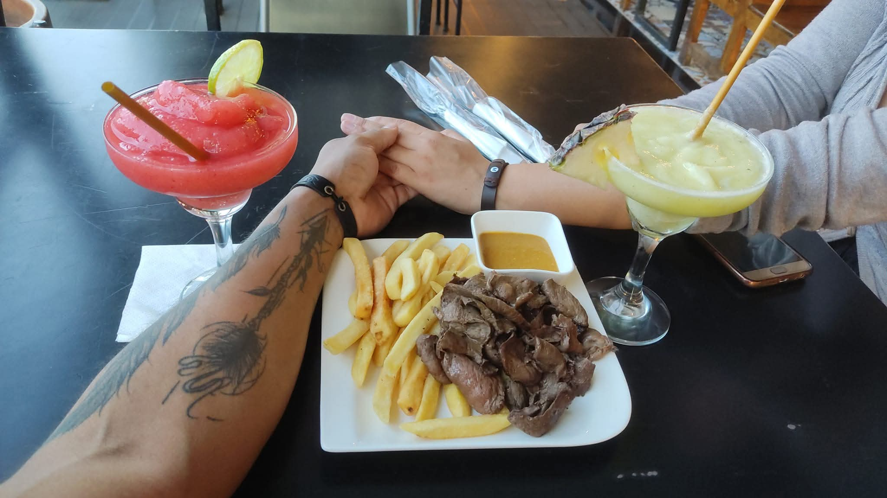
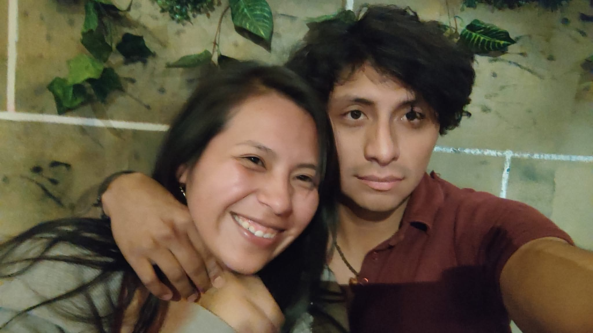
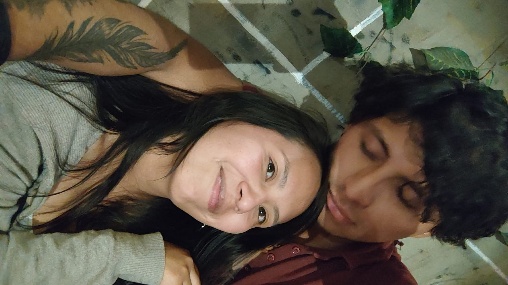

NUESTRO RINCONCITO EN LA WEB
Dale play al video:
Hice este espacio para recordarte lo especial que eres para mí y lo mucho que agradezco tenerte a mi lado. Eres mi sol de cada día por razones como estas:

nunca olvidare como nos veiamos

cuando supe que una sonrisa tuya me hacia muy feliz

entendi que ahi era
¿Por qué ver por separadas esta vida y la siguiente, si una proviene de la anterior? El tiempo siempre es escaso para quienes necesitan, pero para los que aman dura para siempre. Aun después de la noche más oscura, el Sol saldrá de nuevo. Si el corazón es lo bastante fuerte, el alma renacerá con cada nuevo día. Vida tras vida, época tras época, para siempre. Existen almas gemelas destinadas a encontrarse, pero no todas están destinadas a permanecer juntas. ¿Por qué ver por separadas esta vida y la siguiente, si una proviene de la anterior? …habla del anhelo, de un alma que clama por otra
Esta es la ecuación de Dirac, y es la más bonita de toda la física. Describe el fenómeno del entrelazamiento cuántico, que afirma que "si dos sistemas interaccionan entre ellos durante cierto periodo de tiempo y luego se separan, podemos describirlos como dos sistemas distintos, pero de una forma sutil se vuelven un sistema único. Lo que le ocurre a uno sigue afectando al otro, incluso a distancia de kilómetros o años luz". Esto es el entrelazamiento cuántico o conexión cuántica. Dos partículas que, en algún momento estuvieron unidas, siguen estando de algún modo relacionadas. No importa la distancia entre ambas, aunque se hallen en extremos opuestos del Universo. La conexión entre ellas es instantánea. Es lo mismo que ocurre entre dos personas cuando les une un vínculo que solo los seres vivos pueden experimentar. Es el modo en que funciona esta relación a la que llamamos AMOR.
Me encanta todo lo que compartimos, desde los detalles más pequeños hasta nuestros grandes sueños:
Lugares que muero por ir de tu mano:
Nuestra lista de pendientes gastronómicos: